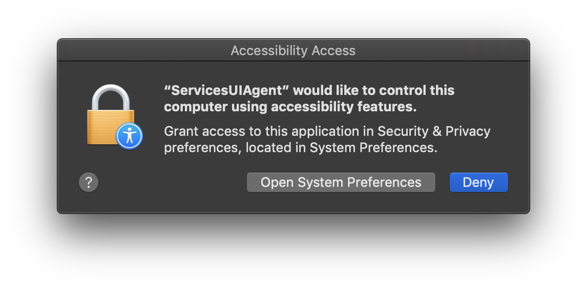
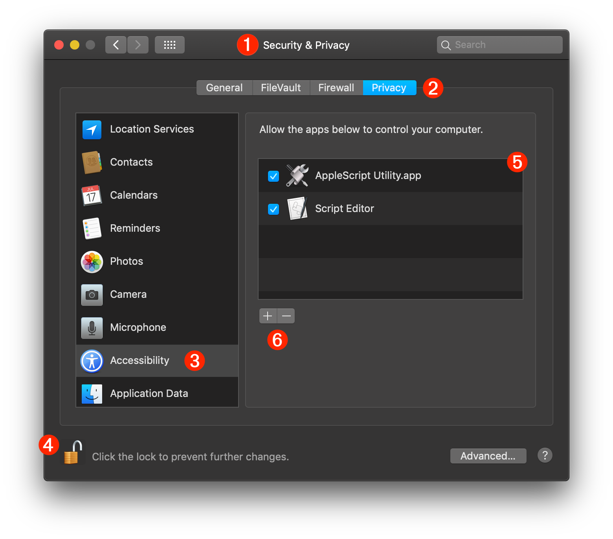
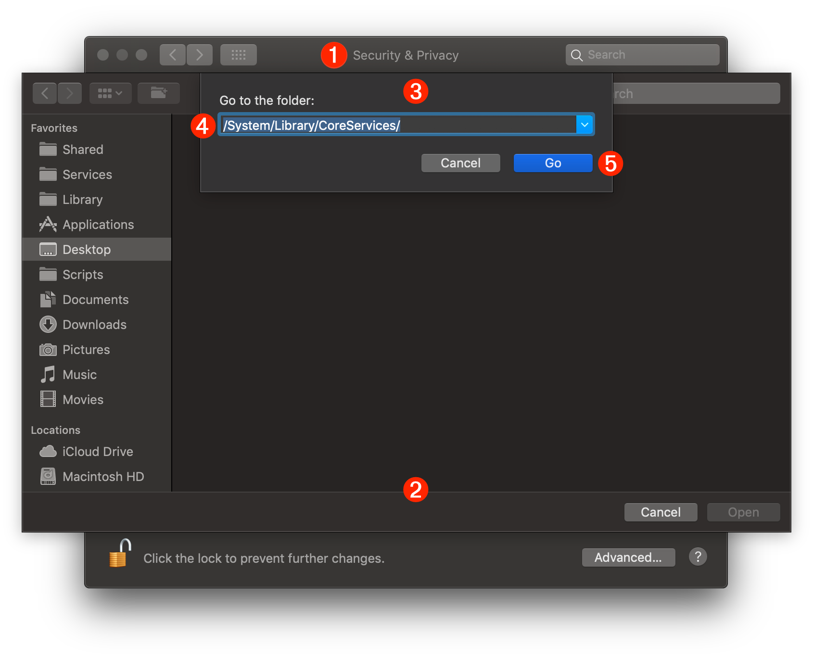
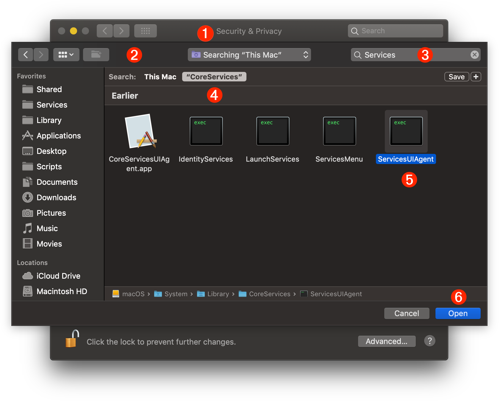
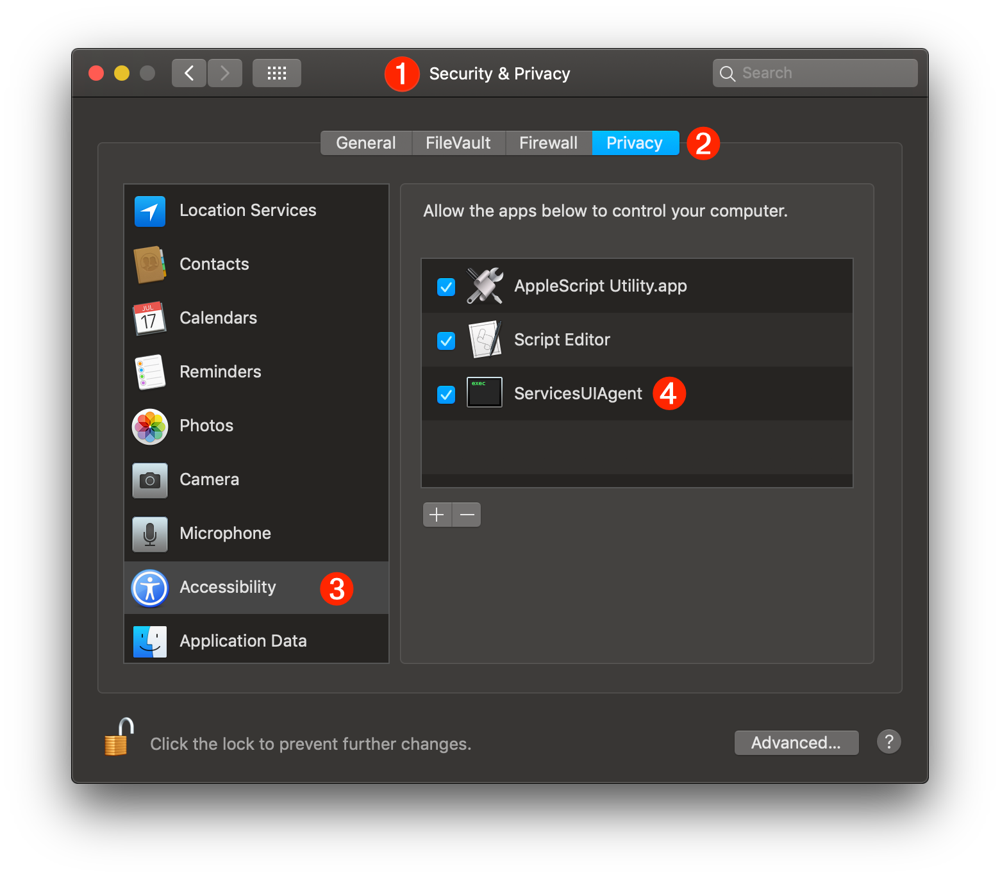

TAP TO HIDE SIDEBAR


Enabling Assistive Access
Sometimes it may be necessary to control apps by manipulating their user interfaces via special AppleScript and JavaScript scripts that mimic an active user through the system’s accessibility frameworks.
Following the Trusted Event Dispatching protocols of macOS, script commands that direct the accessibility architecture require specific user approval to execute.

The following steps detail how to enable “User Interface Scripting” for scripts placed within an Automator workflow.
The “Security & Privacy” system preference pane
Preferences for enabling scripting access to the Accessibility frameworks are available in the “Security & Privacy” system preference pane.
To access the “Security & Privacy” system preference pane, open the System Preferences app by selecting “System Preferences…” from the Apple menu (), and then choose “Security & Privacy” from the app’s “View” menu.

1 The Security & Privacy system preference pane in the System Preferences application.
2 The Privacy tab is selected in the Security & Privacy system preference pane.
3 The Accessibility category is selected in the privacy categories list.
4 The lock|unlock button for enabling access to the accessibility parameters. Access requires an administrative password.
5 The Accessibility Access List is a list of applications identified for access to the accessibility frameworks. Accessibility access for the applications in this list is controlled by selecting|deselecting the checkbox before the application’s title. TIP: if you control-click an application in the list, a popup menu for Show in Finder will become available.
6 The plus (+) and minus (-) buttons for adding or removing applications from the list. These buttons are only enabled while the preference pane is unlocked.
Adding the ServicesUIAgent Application to the Accessibility Access List
Automator actions that contain scripts targeting the Accessibility frameworks, are executed by the ServicesUIAgent application, a special system process whose use must be authorized by an administrative user of the computer.
To add and authorize this application, click the plus (+) button and a standard file chooser sheet will be displayed over the preference window.
Since the ServicesUIAgent application is a system process, its bundle resides within the System folder of the computer. To locate the application, we’ll use the chooser dialog’s optional path input. Type Shift-Command-G (⇧⌘G) to summon the path input dialog over the sheet:

1 The Security & Privacy system preference pane in the System Preferences application.
2 The file chooser sheet displayed over the preference pane.
3 The optional path input dialog summoned by typing Shift-Command-G (⇧⌘G). This dialog will accept the path to the folder or file you wish to reveal in the file chooser dialog.
4 The ServicesUIAgent application resides within the CoreServices folder of the System Library folder, so enter the following UNIX path to that folder: /System/Library/CoreServices/
5 Press the Go button to display the contents of the CoreServices folder in the file chooser dialog window.
Once the Go button is pressed in the optional path input dialog, the contents of the CoreServices folder will be displayed in the file chooser dialog window. We’ll enter a search term in the dialog to filter the contents of the CoreServices folder for items whose name contains the term “Services.”

1 The Security & Privacy system preference pane in the System Preferences application.
2 The file chooser sheet displayed over the preference pane.
3 Enter the term “Services” in the dialog’s search field.
4 focus the search specifically to the CoreServices folder by selecting the search domain button labeled “CoreServices.”
5 Select the ServicesUIAgent application icon in the dialog view.
6 Click the Open button to complete the selection process.
The ServicesUIAgent application will now appear in the Accessibility Access List as an application approved to access and use the Accessibility frameworks of the system. Automator workflows containing scripts for controlling the user interface will now be unimpeded in their function.

1 The Security & Privacy system preference pane in the System Preferences application.
2 The Privacy tab is selected in the Security & Privacy system preference pane.
3 The Accessibility category is selected in the privacy categories list.
4 The ServicesUIAgent application is approved for access to the Accessibility frameworks.
Resetting the Privacy Database
ADVANCED USER TIP: should you wish to clear the current settings of the privacy database for a category, such as for the Accessibility category, you can enter and run any of the following commands in the Terminal application. NOTE: these commands cannot be undone.
The tccutil command manages the macOS privacy database, which stores decisions the user has made about which applications may access personal data.
| Reset the Privacy Database | ||
| 01 | tccutil reset AddressBook | |
| 02 | tccutil reset Calendar | |
| 03 | tccutil reset Reminders | |
| 04 | tccutil reset Photos | |
| 05 | tccutil reset Camera | |
| 06 | tccutil reset AppleEvents | |
| 07 | tccutil reset Microphone | |
| 08 | tccutil reset Accessibility | |
This webpage is in the process of being developed. Any content may change and may not be accurate or complete at this time.
DISCLAIMER